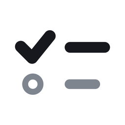
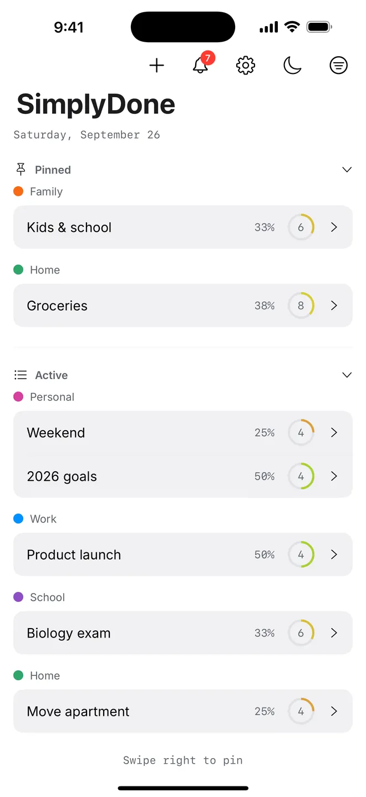
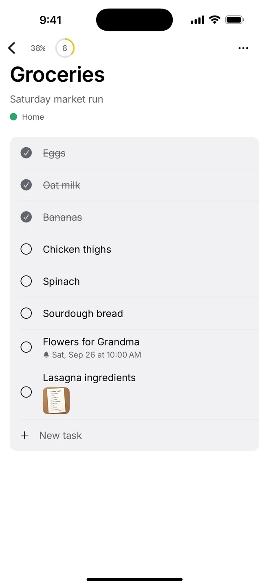
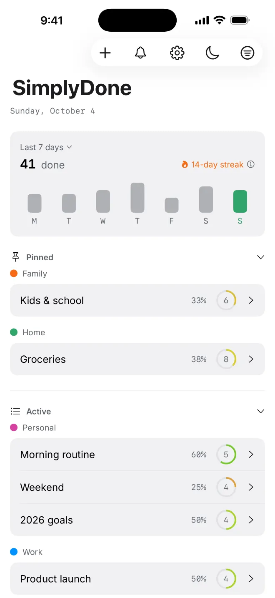
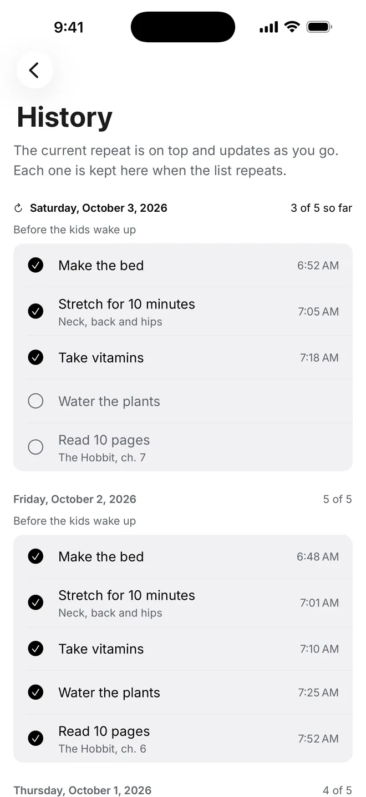
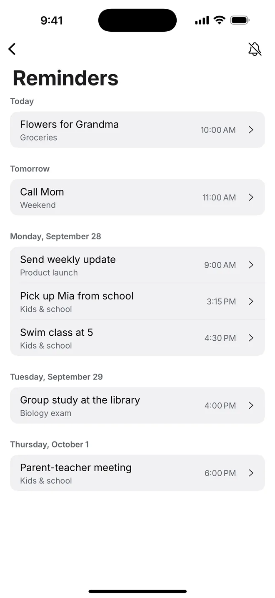
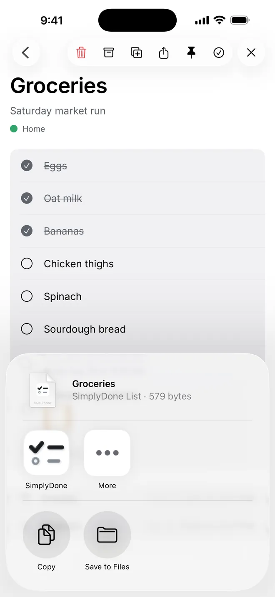
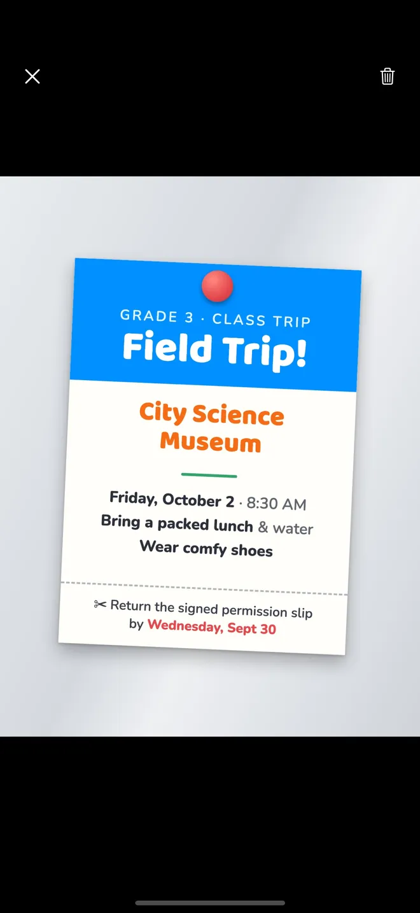
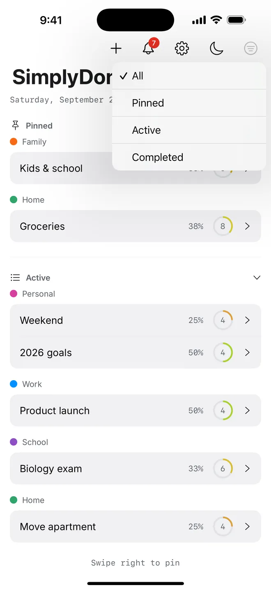
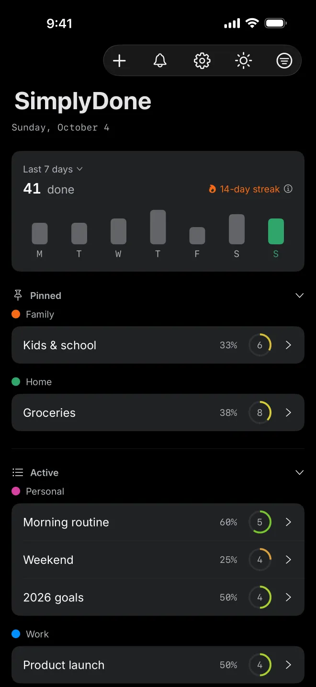

SimplyDone - ToDo & Tasks
Lists, tasks, reminders and routines, kept simple.










Kept simple
Private by design
Your lists, tasks and photos are saved only on your device. No account, no ads, no tracking, no analytics.
Repeating lists
Repeat a list every day, every week or every 2 weeks. Done tasks start fresh, and History keeps what got done. With Pro.
Reminders
Set a reminder on any task and see what's coming up today, tomorrow and later.
Share with AirDrop
Send a list to another iPhone or iPad. It opens right in SimplyDone. Sharing is free.
Photos and descriptions
Add a description or a photo to any task, so the details are right where you need them.
Groups, pins and filters
Color-code lists into groups, pin the ones you use most, and filter to see just what matters.
Light and dark
Follows your iPhone's appearance, or switch between light and dark with one tap on the main screen.
7 languages
English, Spanish, Japanese, Korean, Thai, Vietnamese and Simplified Chinese.
Free, with a one-time Pro
Free
Up to 3 lists with up to 3 tasks in each. Reminders, photos, groups and sharing included.
SimplyDone Pro
Unlimited lists and tasks, plus repeating lists, progress and streak. Buy it once and keep it for good. No subscription.